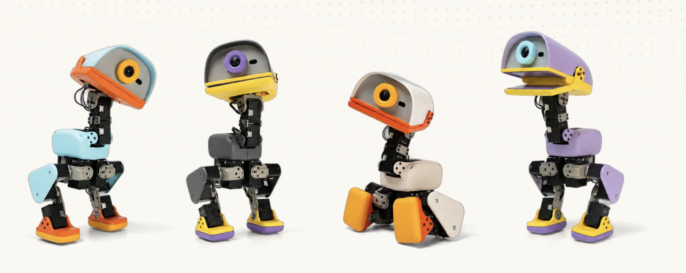

Sits down, holds the pose, stands back up on its own.
Flat on its back to standing, all by itself, ready for the next command.
Velocity-tracking gait.
It doesn't speak. It nods, it shakes its head, and answers in its own little sounds — a voice unique to every duck.
Roller skating locomotion when the skates are equipped.
Dips the beak to the ground, scoops, and pops back upright. Can carry an item and release it.
Pre-order yoursEvery behaviour is a policy you can retrain on your own machine.
Every Microduck ships in one of four colourways. Same robot, same brains underneath — pick the shell that best fits you.

The robot is everything you need on day one. The packs add play gear and spare parts.
Sits down, holds the pose, stands back up on its own.
Trained behaviour · gamepad or voice triggerFlat on its back to standing, all by itself, ready for the next command.
Fall recovery · two IMUsVelocity-tracking gait.
Trained gait · gamepad controlIt doesn't speak. It nods, it shakes its head, and answers in its own little sounds — a voice unique to every duck.
Roller skating locomotion when the skates are equipped.
Dips the beak to the ground, scoops, and pops back upright. Can carry an item and release it.
Pre-order yoursEvery behaviour is a policy you can retrain on your own machine.
Every Microduck ships in one of four colourways. Same robot, same brains underneath — pick the shell that best fits you.
The robot is everything you need on day one. The packs add play gear and spare parts.